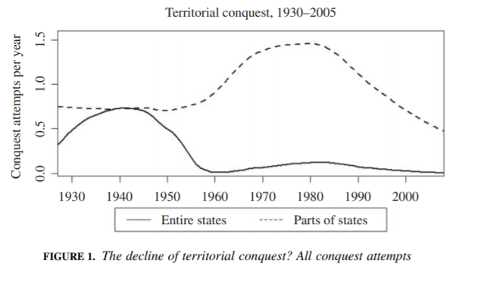
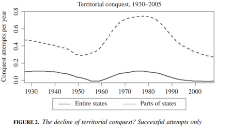
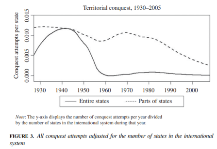
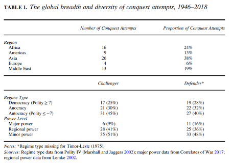
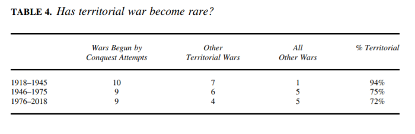
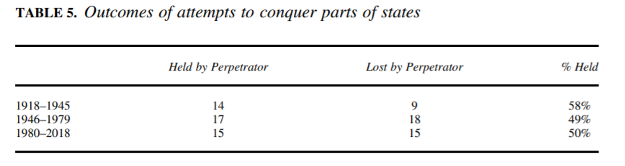
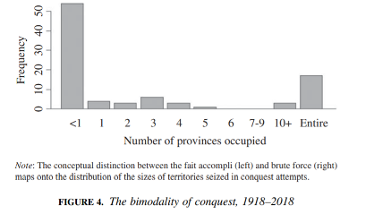
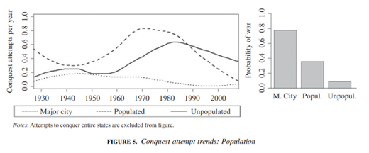
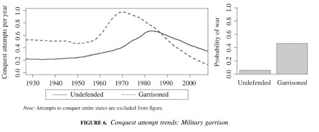

收录于合集

作品简介
【作者】 Dan Altman，美国佐治亚州立大学助理教授。主要研究方向为国际安全，聚焦战略问题和处于战争边缘时的国家策略。
【编译】 任潇依（国政学人编译员，北京大学国际关系学院本科生）
【审校】 杨紫茵 胡瑞琨
【排版】 高佳美
【美编 】马颖
【来源】 Altman, D. (2020). The Evolution of Territorial Conquest After 1945 and the Limits of the Territorial Integrity Norm. International Organization , 74(3), 490-522. doi:10.1017/S0020818320000119
期刊简介
《国际组织》（International Organization），创刊于1947年，是一份处于领先地位的同行评议期刊，内容涵盖国际事务的各个领域，主题包括：对外政策、国际关系、安全政策、谈判与冲突解决等等。根据Journal Citation Reports的数据，2019年该期刊影响因子为5。
1945年后领土征服的演变和领土完整规范的局限性
The Evolution of Territorial Conquest After 1945 and the Limits of the Territorial Integrity Norm
Dan Altman
内容提要
过去的研究认为，领土完整的规范使得1945年后的领土征服现象急剧减少，1975年后几乎消退。然而，本研究使用了关于领土征服的企图的新的、更加全面的数据，提出了修正的1945年后征服史。本文认为，尽管征服整个国家的企图确有减少，征服国家部分地区的企图却比以前认识到的更为普遍。1945年后的领土征服除了频率下降外，它与战争的关系也在演变。1945年以前试图进行征服的挑战者经常发动战争，然后试图占领大片领土。但在今天，挑战者更多的是占领小块区域，然后试图避免战争。挑战者们利用既成占领事实的战略，越来越多地来到引发战争风险较小的地区，例如人口少和缺乏守备部队防卫的地区，尽管这对于挑战者而言还是无异于一场精心策划的赌博。行动上的限制似乎针对的是容易引发战争的侵略，而不是对领土现状的修改，因为对这种小块领土的占领没有减少。征服的演变是战争减少的征兆，而不是其原因。在基于新数据的研究中，大多数关于领土完整的规范可以抑制征服或战争的证据都消失了。企图通过夺取小块领土来逃脱惩罚很可能是21世纪国际安全形势的一个决定性因素。
文章导读
01
引言
征服已经成为过去时了吗？领土征服已有多么罕见？鉴于征服在人类历史的大部分时间里都是战争的核心要素，这些疑问又可以引出另一个问题：战争的起因有没有改变？过去的研究对1945年以来的征服历史达成了相当程度的共识，即对整个国家的征服在二战后基本停止，对于部分国家的征服也急剧减少，并在1975年后几乎全部结束。因此，1975年以后，领土战争变得罕见，这使国家间战争起因发生了历史性变化。不断加强的领土完整规范被认为是征服和战争减少的主要原因，并得到国际社会更加有力的维护。
但上文的共识似乎与当今世界上一系列领土冲突的现状有所矛盾，例如俄罗斯在2014年入侵克里米亚半岛，中印边界问题，以及印度和巴基斯坦、亚美尼亚和阿塞拜疆、苏丹和南苏丹之间日益恶化的争端等等，潜在的领土战争似乎遍及全球。这些恐惧是空穴来风吗？
关于领土征服的新的、更全面的数据使得重新审视学术研究和大众感知之间的差距变得可能。现代征服数据库(Modern Conquest data set)包含了1918年至2018年151次征服的企图，根据这些数据，作者在本研究中展示了修正后的1945年后领土征服的历史，以期对当今世界的征服建立一个新的认识。该成果与学术界的共识有着惊人的分歧。现代的征服与1945年以前的征服在规模、位置和战略上都有明显的不同，但事实证明， 征服比过去研究所认为的更具持续性，征服的性质也在发生演变。 早期，征服和战争似乎自然而然地相伴而生，通常是先发动战争，然后试图占领领土。今天，主要的顺序已经变成：夺取一小块领土，然后尽量避免战争。新的数据显示， “反对战争”(war-averse)的征服并没有相应的下降,既成事实（the fait accompli）已成为征服的主要战略， 征服行动更青睐于那些面积比国家小得多、人口稀少、不设防的领土。
与其说征服的衰落导致了战争的衰落，不如说战争的衰落导致了容易引发战争的征服的衰落。 当然，尽管试图侵略的国家降低了他们的野心以降低挑起战争的可能性，发生战争的风险也并非为零，正如阿根廷没有料到对福克兰群岛的占领会引发战争，巴基斯坦也没有料到对卡吉尔地区的侵占会引发战争一样。但是自1945年以来，这些由于错误估计而意外挑起的战争在国家间战争中已经占据相当大的比例。
对征服的历史进行修正有几个原因。首先，如果征服真的已经像过去研究所显示的那样罕见，那么对领土冲突的研究将是历史性的，而无关当前利益。通过记录征服和领土战争的持续性，作者证明了领土冲突的持续重要性。第二，学者可以使用本研究对于现代征服的描述作为评估他们的发现是否适用于今天的征服的基础。第三，通过描述现代征服的战略和特点，本研究为国家阐明应如何应对未来具有战争危险的领土冲突。最后，通过质疑领土完整规范的作用，本研究有助于更好地理解现代战争的起因。
当然，没有一篇文章能提供一个全面的征服历史。作者重点讨论了领土完整规范等约束是否对于征服的演进具有塑造作用。作者首先回顾现有的学术共识，随后提出关于征服的演变的论点。第三，作者描绘了征服衰落的一些令人惊讶的性质。第四，根据现有的数据库，作者表明在实际征服停止之后，领土战争仍然存在。第五，作者对以下证据表示怀疑：国家日益频繁进行干预以扭转征服进程，或降低征服的企图的成功率。第六，作者为将既成事实认定为现代征服的主导战略提供了经验基础。第七，作者识别出可减少引发战争风险的被占领地区的特征以证明征服的企图中逐渐减少的战争倾向。最后，作者以解释为何占领小规模领土可能是本世纪国际安全形势的一个决定性因素作为总结。
02
领土完整规范
现有的对领土征服减少的解释中，占主导的是：1945年后变得更加强大的领土完整规范抑制了征服，对整个国家的征服基本消失。这是否意味着领土冲突已不再是国家间关系的紧迫问题？与Tanisha Fazal的研究一样，本研究也将领土完整规范定义为一种广泛的社会认识，即不允许在未经另一国同意的情况下部署军事力量以夺取领土，并宣称对这部分领土的主权。
可是应当如何理解征服呢？是仅仅占领那部分领土，还是在较长时间内保持控制权？这引发了另一个问题：因领土完整规范而减少的是一切征服行为，还是只是具有持久结果的那些？为了避免这样的混淆，作者使用“征服的企图”来代替“征服”，二者在行为上是相对应的，成功的征服企图包括被视为结果的征服，如果国家夺取领土但未能控制或只短暂地控制就称其为不成功的。
对于领土完整规范最简单、最普遍的理解是，它阻止了大多数征服的企图，并使征服近乎消亡。尽管征服的企图仍然定期产生，但国际社会会频繁干预以确保这些企图失败，维护领土完整规范。当外部国家干预并战胜侵略者而使得领土完整规范抑制了成功的征服时，就意味着领土战争的持续存在，如海湾战争和朝鲜战争。仅仅挫败成功的征服也并不足以阻止战争，为了达到目的，规范必须抑制一切征服的企图。
仅仅观察到一种没有第三方干预的持续的征服企图和领土战争的模式，还不足以暗示领土完整规范缺乏广泛的合法性。那些潜在的征服者可能在不质疑其合法性的前提下否认规范对自己行为的适用性，或者直接拒绝并公然违反，或者宣称合法拥有所占领土。由此可见，一种规范可能既被广泛认为是合法的，又不能减少违反行为或对这些行为进行昂贵的惩罚。 本研究并不质疑该规范的合法性，只是认为其在约束国家行为方面能力有限。 这项研究表明，占领小规模领土、甚至引发战争的成功或不成功的征服企图仍在出现，且一般是在没有第三方干预的情况下。鉴于此，本文将对1945年后的征服提出另一种解释。
03
征服与战争之间不断演变的关系
征服和战争似乎天然是一致的：侵略者入侵，打败守军，夺取他们想要的领土。但这种形式的征服在1945年以后急剧减少，但这并不意味着征服的消失，相反，在征服与战争关系变化的同时，征服本身也在演变。1945年以后，挑战者越来越多地将目标限制为夺取较小面积的领土，然后试图避免战争。
理解该演变的方法之一是区分两种不同的征服战略：暴力和既成事实。暴力战略更适用于征服整个国家的企图；既成事实战略则意图在未经对方允许的情况下获取有限收益，并避免局势升级，它的成功取决于对对方可接受底限的正确估量。虽然过去的征服将这两种战略都包含在内，本研究将表明， 在二战后，暴力呈现下降趋势，既成事实成为了现代征服的主要战略。 由于各国日益避免有意发动战争，容易发生战争的征服形式才更早、更迅速地走向衰落。因此， 征服的演变可以体现出征服的减少是战争减少的征兆，而非战争减少的原因。
如果（容易引发战争的）征服的减少仅仅是战争衰落的结果，那么其原因不必然与领土冲突直接相关，自由主义思想的广泛传播、核武器的扩散、二战后不断变化的国际体系结构以及美国外交政策作为国际体系中最强大力量这一独特性质，都可能使得国家更不愿发动战争。学者们也提供了许多看似有理的解释，尽管这些与领土无关的解释不是本研究的考察重点，但它们都比以领土完整规范作为解释更符合事实依据。
征服向既成事实演变的最显著后果是，小规模领土的争端在国际政治中开始具有重要意义。 当然，即使采取流血较少的既成事实战略也会使外交关系恶化，并为未来的冲突埋下伏笔，例如俄罗斯对克里米亚的吞并。这项研究将表明，对于这种侵略企图的持续性和危险性的理解，成为了理解现代国家间冲突难题的一个重要部分。
04
领土征服减少了吗？
关于领土征服的现有共识认为，1945年后领土征服急剧减少，特别是征服整个国家的企图，并在1975年后几乎消失。征服的企图是指一国未经许可便部署军事力量从另一国夺取有争议的领土，并意图持续对该领土进行主权控制，它并不意味着挑战者主张的合法性、国际法层面的合法性或国际社会的承认，也不包括大多数跨界军事行动，如内战干预、越界突袭、维和行动以及军事巡逻中的导航失误，该定义还排除了非国家行为体发动的的征服或对非国家行为体的征服。基于以上限定，现代征服数据库中的数据不包括分裂国家和国家形成的冲突(state- formation conflict)的重要案例，然而这些也可能不断演变为领土问题上的国家间冲突，例如1940年代的阿以战争和印巴战争。这些现有的分析也不包括报复性征服的企图，即意图夺回在被征服中失去的领土。

图一：1930年至2005年所有征服企图数量变化

图二：1930年至2005年成功的征服企图数量变化

图三：根据国际体系中的国家数量进行调整后，1930年至2005年所有征服企图数量变化
来源：摘录自原文
注：图1-3数据均来自Modern Conquest data set，该数据集是Land Grabs data set的升级版，具体见作者另一篇文章[1]
由图可见，1945年之后对部分国家的征服并未减少，其数量甚至在1975年左右达到顶峰，这些证据表明领土完整规范并未减少各类征服企图。总之，1945年以后，征服规模的缩小比它在频率上的下降更为瞩目。图1包括一切征服企图，图2则仅包括成功案例，如果在相关军事争端、危机或战争结束后对领土的控制仍然存在，则判定征服的企图是成功的。比较图1和图2可以发现，基于维护领土完整规范的干预措施并未显著降低征服企图的成功率。
1945年后的非殖民化进程使得国际体系中的国家数目不断增加，这使对征服趋势的分析变得更加复杂。为了确定是否国家数量的增加掩盖了征服的减少，图3根据国际体系中国家的数量对图1进行了调整。经过调整后征服部分国家的企图的确明显下降，然而有趣的是，这种下降始于1980年左右，而非1945年后。
原有的还是修正后的历史都呈现出征服减少的大趋势，但它们之间的差异主要有两点：首先，征服减少的速度很关键，数据证明征服仍然是国际政治中反复出现的、重要的组成部分。其次，并非所有类型的征服都同时走向衰落，与较易引发战争的地区相比，在不易引发战争的地区征服的企图继续出现。此外，征服的企图普遍存在于具有多样政权类型和权力等级的国家中，1945年以前的领土冲突集中在欧洲，现在则更多发生在原殖民地国家，主要大国也较少被卷入其中，这不能支撑强大的国家更有能力违反规范的说法，也说明领土完整规范对于各类国家征服企图的约束有限。
表一：征服企图在全球范围内的广泛性和多样性（1946-2018）

来源：摘录自原文
05
领土战争减少了吗？
由于领土问题长期以来被视为国家发动战争的首要因素，任何征服的减少都会导致国家间战争的减少。在这样的逻辑下，领土战争会随着领土争夺的停止而停止。然而，对近几十年来国家间战争的调查表明，情况并非如此。根据标准战争相关性列表(the standard Correlates of War list)，在1976年至2006年间，一共有18场国家间战争，其中13场为领土战争，与此前相比占比仅略有下降。这说明领土战争在国际政治中仍然至关重要。
表二：领土战争的数量和占比(1918-2018)

来源：摘录自原文
1975年后始于征服企图的战争中，最初具有征服企图的九个国家都在随后的战争中失败。这看似支持了国际社会为维护领土完整规范而干预行动导致这些企图失败的观点，但这一观点的前提是频繁的第三方干预能够降低征服企图的成功率。下文将证明，该前提条件并不成立。 理解这些国家的失败需要从对既成事实战略的依赖入手，这些战争正是挑战者对情势发生误判的结果。
证据也不能表明在1945年后国家间战争发生后的边界变化率如Mark W.Zacher所认为的那样低。此外，边界变化率的下降也不意味着征服企图或领土战争的相应减少，因为在征服的企图失败后，被侵略方很少会要求以对方领土作为补偿，而更多将目标限制于恢复原状，因此边界变化率与征服企图或战争发生的次数并不能完全对应。
06
反对征服企图的干预措施？
加强领土完整规范是否有助于逆转征服行动，并进一步维护该规范？1975年以来，在规范驱动的干预之下征服企图的屡屡失败似乎可以支持该观点。然而，针对部分国家的征服很少受到第三方军事干预，在近几十年中干预也没有变得更加普遍。对于针对整个国家的征服，长期以来第三方干预都相当普遍，这更多是出于现实政治的考量。当然，第三方干预并不必然通过暴力来取得成功，非暴力干预形式的多样性使得观察变得更加复杂。但如表5所示，日益活跃的外交干预措施并未显著提高征服企图的失败率，相反，该比率一直徘徊在50%左右。
表三：针对部分国家的征服企图的结果(1918-2018)

来源：摘录自原文
总的说来，这些证据并不能证明领土完整规范战胜了征服，大大减少了国家间战争的发生，增加了针对维持领土现状的第三方军事干预，或降低了征服企图的成功率。这些证据为1945年后征服的演变提供了一个全新的、不同的解释。
07
既成事实：现代征服战略
随着各国越来越多地寻求机会在不发动战争的情况下夺取领土，既成事实成为了征服的主要战略。正如前文提到的，既成事实战略的目标是规模更小的领土，它引发战争的几率也较低。夺取一国的部分领土和全部领土看似只是在程度上有所不同，但实际上随着目标领土越来越大，在不引发战争的情况下夺走它的可能性也越来越小。在防御者将竭尽全力进行抵抗之时，挑战者也就没有理由再限制自己的野心。因此，挑战者要么瞄准整个领土，并采取暴力策略，要么使用既成事实战略，夺取一块小得多的领土以逃脱惩罚。图4提供了1918年至2018年期间在征服的企图中夺取领土大小的分布情况，图像呈现的双峰性可以验证上文的观点。简而言之，大多数征服的企图都是针对小块区域，特别是在1945年以后。

图四：被占领领土面积分布的双峰性(1918-2018)
来源：摘录自原文
08
具有战争倾向的征服的减少
在20世纪征服的演变中有一条主线贯穿始终：即具有战争倾向的征服的减少。 也正因此，既成事实得以能成为现代征服的主要形式。具有最小战争风险的正是那些低价值领土，其中人口和战略价值与提高的战争概率的关系最为密切（详见原文附录），为了便于对战略价值进行评估，可以代为考量在领土上是否有守备部队存在。图5证实了这样的观点，从1918年到2018年，占领至少包括一个主要城市（至少10万人）的领土会有78%的几率发生战争，占领不包括主要城市的领土会有36%的几率引发战争，相比之下，占领一个无人居住的地区则只有9%的几率发生战争。此外，针对人口稠密地区的征服企图更早开始减少，减少幅度也更大。

图五：人口因素影响下征服企图的变化趋势
来源：摘录自原文
在80年代前后，针对有守备部队地区的征服企图也经历了类似的演变。此处守备部队(garrison)的定义也包括民兵和警察。夺取具有守备力量的领土通常意味着与守备部队作战，事实也证明，仅有5次这样的尝试没有导致任何战斗死亡。重视守备力量的理论基础来自威慑研究中的“绊网(tripwire)”概念,该概念认为，一国在争议地区向前部署军队可以表明一旦其遭受攻击后进行战斗的决心，这可以提高国家行为的可信度，可一旦失败，发生战争的几率也更高。因此，将征服企图局限在不设防地区往往可以避免引发战争。

图六：守备部队影响下征服企图的变化趋势
来源：摘录自原文
图6可以支持以上观点，在1990年前后，占领未设防地区首次成为征服企图的主要部分，突显了征服中战争倾向的下降。如果将人口和守备部队两大因素综合起来看，就可以发现挑战者通常喜欢绕开守备部队，而占领其附近的空旷地区，这与既成事实的战略一致。上述图像也暗示了在21世纪初，即使是具有避战倾向的领土征服也可能减少，时间将会证明这是真正的趋势还是暂时的平静。
09
占领小规模领土的企图将如何塑造21世纪？
征服经历了重大的演变，但人们还是普遍认为是领土完整规范制约了征服，或者使得征服的企图大多失败。但事实上，国际社会很少会为扭转征服的企图而进行军事干预，这些干预也并没有显著降低征服企图的成功率。规范的话语合法性仍然强大，但应当承认规范对于征服的约束作用有限，这对于理解二战以后的国家间冲突至关重要。
国际关系学界一直致力于解答1945年以后国家间战争，特别是高强度战争和大国战争间为什么会减少的问题。这项研究没有解答这个基本问题，但不论如何，这些趋势都扩展到了领土问题上，并逐渐改变了领土征服的性质。随着既成事实成为主要的征服战略，领土征服变得规模更小、更有针对性、暴力程度更低。
然而，尽管征服的企图越来越具有避战倾向，它们仍然是大多数国家间战争起因的核心，一些无人居住、无守备力量的地区也可能成为两国冲突的战场，例如1969年中苏珍宝岛事件、1999年印度和巴基斯坦的卡吉尔战争，展望未来，在具有类似性质的地区仍然可能发生边界冲突，夺取一小块领土也可能成为引向战争的关键一步。在看似不重要的边缘地区，能否成功阻止或妥善处理针对突发的既成事实的反应，很可能会决定战争是否发生。 尽管在最初试图通过占领小块领土来逃脱惩罚似乎是一个边缘现象，事实可能证明这将成为21世纪国家间安全形势的一个决定性特征。
译者评述
基于新的数据和对现有认识的重新审视，作者在本文当中描述了1945年以后征服本身以及征服同战争关系的演变。作者认为领土冲突仍然具有持续重要性，既得事实战略已经成为现代征服运用的主要战略，更具有自我局限性的征服企图成为主流，尽管有时局势可能超出征服者的控制并燃起战火。这项研究的结果有助于帮助读者重新认识1945年后的国家间冲突、现代征服的特征和现代战争的起因，对于认识和解决当下以及未来的领土冲突也有裨益。
作者反对过分强调领土完整规范指导下的干预行动对于抑制征服的作用，而是认为正是二战后战争衰落的大趋势使得更容易引发战争的征服类型明显走向衰落。作者对于领土完整规范实际效用的质疑也体现出国际规范在执行层面面临的困境。另一方面，战争衰落的趋势对于征服的演变具有重要影响，但为何战争同领土问题总是具有如此密切的联系，而人类总是如此强烈关注对于领土完整的保护，尽管在本文当中，这一点仅仅是作为前提、而非论述的重点，但也可以启发读者开展进一步的思考。
作者在考察征服企图的特点同战争的关系时，主要考虑的是目标领土的规模和重要性。但其实对于一国而言，其邻国边界政策的属性也会在很大程度上影响其政策，例如有学者认为中国选择的就是“强硬对扩张，宽和对现状”的政策。因此可以推论，征服者自身的实力和边界政策也会影响对方的判断，当其与本文中所提及的因素发生共同作用时会产生怎样的结果，也许是本文所未论及的。此外，作者之所以能够得出国家会采取既得事实战略的判断，一个前提条件就是双方愿意以妥协来避免战争的代价，然而有时国家会因为自认为使用了更优战略、意图提升谈判地位或是自恃拥有第三方协助而发动攻击，这些情况也可能为作者的观点带来更多的挑战。
参考文献
[1]Altman, Dan. 2017. By Fait Accompli, Not Coercion: How States Wrest Territory from Their Adversaries _. International Studies Quarterly _61 (4):881–91.
[2]聂宏毅&李彬.(2008).中国在领土争端中的政策选择.国际政治科学(04),1-34+146.
[3]Johnson, D.D., & Toft, M.D. (2013). Grounds for War: The Evolution of Territorial Conflict. International Security 38(3), 7-38.
文章观点不代表本平台观点，本平台评译分享的文章均出于专业学习之用, 不以任何盈利为目的，内容主要呈现对原文的介绍，原文内容请通过各高校购买的数据库自行下载。
**
**
添加 “国小政”微信
获取最新资讯


国政学人
支持学术公益与知识传播
微信扫一扫赞赏作者 __赞赏
已喜欢，对作者说句悄悄话
取消 __
发送给作者
发送
最多40字，当前共字
上一页 1/3 下一页
长按二维码向我转账
支持学术公益与知识传播
受苹果公司新规定影响，微信 iOS 版的赞赏功能被关闭，可通过二维码转账支持公众号。